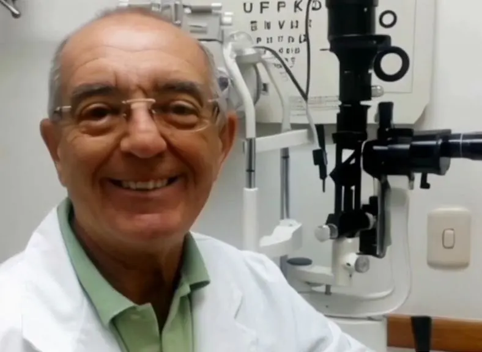
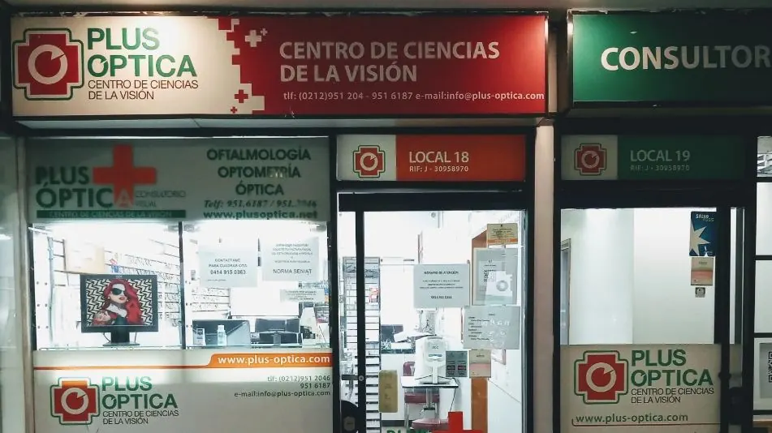

Catálogo
Elige tu montura antes de venir.
Todas las monturas de la óptica, separadas por tipo y con su precio. Pregunta por la que te guste y pruébatela en el local.
Monturas tomadas de sus publicaciones de Google e Instagram. Las que no muestran precio dicen "Consultar precio". En la página final se carga todo el catálogo de la óptica.
Quién te atiende
Una cara conocida en Chacaíto.

Manuel Espiño Liste · Optometrista
«Persiguiendo la perfección en óptica.»
El lema con el que Plus Óptica se presenta en sus redes. En la página, cada paciente sabe quién lo va a atender antes de llegar.
Por qué venir
Todo en un solo lugar.
Lo que Plus Óptica cuenta de sí misma en su perfil y sus publicaciones.
- Óptica, optometría y oftalmologíaExamen, consulta médica y lentes sin cambiar de local.
- Especialistas en multifocales progresivosPara ver de cerca y de lejos con un solo lente.
- Lentes para pantallas y trabajoLentes ocupacionales para la fatiga visual de la computadora.
- Antirreflejo y filtro de luz azulTratamientos para manejar de noche y pasar horas frente a pantallas.
- Abierto también los sábadosDetrás del BECO de Chacaíto, con acceso para silla de ruedas.
Tu cita
Pide tu examen en un minuto.
Elige qué necesitas y el día en el calendario. La óptica te confirma por WhatsApp.
1 · ¿Qué necesitas?
2 · ¿Para quién?
3 · ¿Qué día?
4 · ¿A qué hora?
Elige motivo, día y hora.
Demostración: no se envía ningún dato. En la página final la solicitud le llega a la óptica.
Servicios
Todo para tu vista, en un solo lugar.
Optometría
Examen de la vista y fórmula de tus lentes.
Oftalmología
Consulta para revisar la salud de tus ojos.
Lentes formulados
Monofocales, bifocales o progresivos, según tu fórmula.
Monturas
Desde opciones económicas hasta marcas, para adultos y niños.

Visítanos
Detrás del BECO de Chacaíto.
- Dirección
- Centro Doral, local 18, Av. Santa Isabel, Chacaíto. Anexo a la Torre Credicard
- Horario
- Lunes a jueves y sábado, de 11 a. m. a 5 p. m. Viernes, de 11 a. m. a 4 p. m.
- Citas
- En línea o por WhatsApp